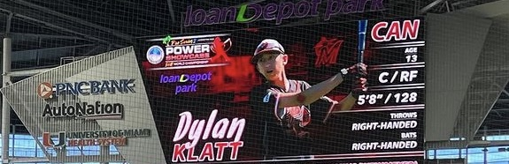

Why Engineering
In the summer of 2022, following a baseball tournament in Florida, my dad and I drove straight to Cape Canaveral to watch a SpaceX launch. We arrived two hours early; however, the launch was delayed.
Being the spoiled brat I was at the time, I convinced my dad to drive me back to Orlando for dinner so I could eat at the world’s largest McDonald’s. While we were eating, SpaceX announced the launch was back on for 10:14 PM; we saw this post at 10:10 PM. Given that Cape Canaveral was an hour-long drive from Orlando, we missed that launch…
The look on my dad’s face wasn’t that of disappointment or anger but a sense of solemn wistfulness. He was so excited to see the launch, yet he may never get the chance to watch one again, just because his son wanted to grab a bite at the world’s largest McDonald’s. That disappointment hit me harder than the semi-final we lost that morning. Guided by that memory of my dad’s face, I began the journey toward one specific goal: to not just witness a rocket launch but to help make one happen. This time, with my dad watching from the front row.
Watching his son take off solo for the first time does not replace a SpaceX launch, yet giving my dad a front row to my first solo flight was some damn good progress; now, currently fabricating composite aerostructures for the UBCO design team, I continue to take further leaps closer to that goal.
3 worlds, one story
From competitive ballparks and flight decks to the driving range—each discipline shapes how I approach engineering problems.


Baseball
14 years of competitive experience. Achieved excellence and mentored younger athletes to do the same.
- Ranked #3 Canadian Freshman in 2022 by Prep Baseball Report
- U14 Canadian National Team
- U18 Filipino National Team
- U18 Milwaukee Brewers Scout Team
- Featured in the baseball documentary "Hard 90 to Home," filmed in Los Angeles
- Former Baseball Instructor at Nicholson Baseball



Flight
My time in the air has reshaped how I view the world from the ground.
- Accepted into flight school at SkyQuest Aviation at 14
- First solo flight at 15
- Earned private pilot license at 17
- Logged 100+ hours in the cockpit to date

Golf
Being a recently retired athlete, I have officially stepped into the realm of golf!
Different sport, same approach—fun is just a side effect of disciplined reps
- Translating rotational mechanics from baseball into a brand new swing
- Leveraging my natural athletic explosiveness to aura farm at the range